Leitura de 17 telas reais (celular de 390 px e computador de 1366 px), com métricas medidas na página, comparação com as práticas de design de aplicativos e um plano de simplificação com dashboards mais visuais. Versão atual no ar em 11/11/2026.
Boa base visual e técnica. O que segura a nota é excesso de blocos e informação repetida.
Contraste (camada escura e clara), fotos de capa, identidade ciano/lima, botões de 48 px, foco visível, rotas e estados vazios.
Mesma informação em 3 a 4 lugares, 8 a 11 tamanhos de letra por tela, até 10 blocos por tela e quase nenhum gráfico.
Veredito: o aplicativo está funcionalmente completo e visualmente bem melhor que há uma semana, mas ainda mostra tudo ao mesmo tempo. O aluno quer saber três coisas ("quando é minha próxima aula, como estou indo, reservo outra?") e o professor outras três ("quem vem hoje, quem faltou, o que precisa de atenção?"). Hoje essas respostas ficam espalhadas por cartões do mesmo peso visual. A recomendação é reduzir, hierarquizar e transformar números em gráficos, sem tirar nenhuma função do sistema.
| Critério | Nota | Por quê |
|---|---|---|
| Hierarquia visual | 3 | A capa escura destaca o "agora", mas abaixo dela 4 a 6 cartões brancos têm o mesmo peso. Não há "segundo plano" claro. |
| Densidade e poluição | 2,5 | Início do aluno com 7 blocos e Início do professor com 10 (medido). Títulos e rótulos competem com o conteúdo. |
| Redundância | 2 | Próxima aula, plano, meta, presença e treino aparecem em 3 a 4 telas diferentes (mapa na seção 5). |
| Consistência | 4 | Duas fontes, raios, botões e chips padronizados por tokens. Falta padronizar a escala de tamanhos (seção 4). |
| Contraste e acessibilidade | 4 | Texto principal acima de 15:1, apoio acima de 5,4:1, botões legíveis, foco visível, alvos de 44 px. Falta: rótulos em gráficos futuros, ordem de foco do menu lateral. |
| Responsividade | 4 | Sem rolagem lateral entre 320 e 1024 px (medido). Computador usa menu lateral e duas colunas. Tablet usa a coluna do celular. |
| Identidade visual | 4 | Logo, ciano e lima coerentes, fotos de capa aplicadas. Falta ilustração de estado vazio com a marca. |
| Dashboards e dados | 2 | Só números soltos e um gráfico de barras (ocupação da semana). Sem tendência, sem comparação, sem destaque de exceções. |
| Navegação e arquitetura | 3 | Aluno: 5 abas, três delas parecem "agenda" (Início, Agenda, Aulas). Professor: 6 itens, com Início e Chamada mostrando as mesmas aulas. |
| Desempenho percebido | 4 | Esqueletos de carregamento, fotos leves (50 a 150 KB), publicação em rede de borda. Capas ainda sem pré-carga. |
"Blocos" são cartões, listas e destaques visíveis. "Clicáveis" são botões, links e campos visíveis. "Tamanhos de letra" é quantos tamanhos diferentes aparecem. Meta sugerida: no máximo 5 blocos, 6 tamanhos de letra e 8 clicáveis acima da dobra por tela.
| Tela | Blocos | Clicáveis | Tamanhos de letra | Altura (px) | Leitura |
|---|---|---|---|---|---|
| Aluno, celular: Início | 7 | 8 | 8 | 1183 | Médio Bloco demais para uma tela "de hoje". |
| Aluno, celular: Agenda | 2 | 19 | 7 | 844 | Baixo Enxuta. Os 19 clicáveis são a faixa de 14 dias. |
| Aluno, celular: Aulas | 3 | 4 | 10 | 1541 | Alto 10 tamanhos de letra e três blocos de "frequência". |
| Aluno, celular: Avisos | 0 | 8 | 5 | 844 | Baixo Simples e clara. |
| Aluno, celular: Perfil | 4 | 12 | 7 | 1581 | Médio 5 cartões empilhados; trocar senha e aparência pesam. |
| Aluno, celular: detalhe da aula | 1 | 3 | 6 | 844 | Baixo Boa, mas a data aparece duas vezes (barra e capa). |
| Aluno, computador: Início | 7 | 8 | 8 | 820 | Médio Cabe numa tela, mas cheia. |
| Aluno, computador: Agenda | 3 | 20 | 11 | 820 | Alto 11 tamanhos de letra com a aula aberta ao lado. |
| Professor, computador: Início | 10 | 9 | 9 | 1135 | Alto Maior densidade do sistema. |
| Professor, computador: Chamada | 4 | 8 | 8 | 820 | Médio Repete as aulas do Início. |
| Professor, computador: Turmas | 0 | 31 | 6 | 820 | Baixo Grade semanal clara, mas 31 botões "Editar/Desativar". |
| Professor, computador: Treinos | 0 | 11 | 5 | 820 | Baixo Enxuta. |
| Professor, computador: Alunos | 4 | 17 | 8 | 1099 | Médio Tabela larga com plano, senha e desativar na mesma linha. |
| Professor, celular: Início | 10 | 9 | 9 | 1851 | Alto Duas telas e meia de rolagem para ver tudo. |
| Informação | Onde aparece hoje | Proposta |
|---|---|---|
| Próxima aula | Início (destaque), Agenda (cartão), Aulas (lista), Avisos (notificação) | Destaque só no Início. Na Agenda vira uma linha marcada na lista. Aulas guarda a lista completa. |
| Plano semanal | Etiqueta no Início, etiqueta na Agenda, cartão em Aulas, quadro do professor | Uma única barra "Esta semana: 2 de 5" dentro do cartão de desempenho. Sem etiquetas soltas. |
| Presença e constância | Início (aulas no mês e constância), Aulas (anel), Aulas (calendário), Aulas (meta) | Um cartão "Seu mês": anel de presença, 8 semanas em barras, meta com Bronze, Prata e Ouro. Calendário vira detalhe opcional. |
| Treino do dia | Início (resumo), detalhe da aula (completo) | No Início, só o título do treino com link. O conteúdo fica no detalhe da aula. |
| Horários de hoje | Início e Agenda | Início mostra no máximo as próximas 2 aulas. Agenda é o lugar de todos os horários. |
| Recado do professor | Início (cartão) e Avisos (lista) | Só o sino com contagem no topo; o recado novo aparece como faixa curta e some quando lido. |
| Aulas do dia (professor) | Início ("Turmas de hoje"), botão "Painel do dia", aba Chamada | Uma só tela "Hoje" com a chamada dentro de cada aula. Trocar de dia fica na mesma tela. |
| Ações por aluno (professor) | Plano, Nova senha e Desativar na mesma linha da tabela | Menu "mais ações" por linha; o plano é editado ao abrir o aluno. |
| Título de bloco vs título de tela | "Frequência em novembro" aparece em dois cartões da mesma tela | Um cartão só (ver "Seu mês"). |
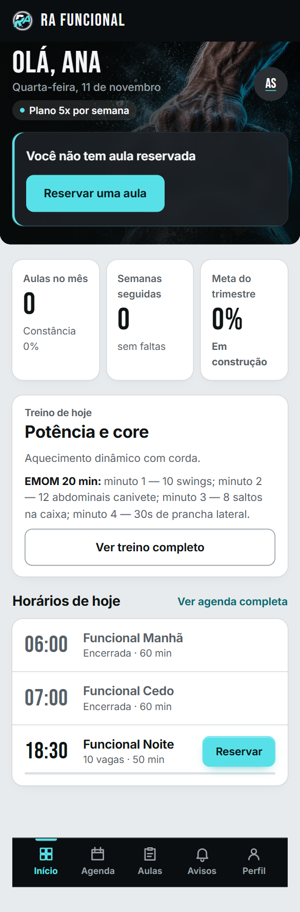
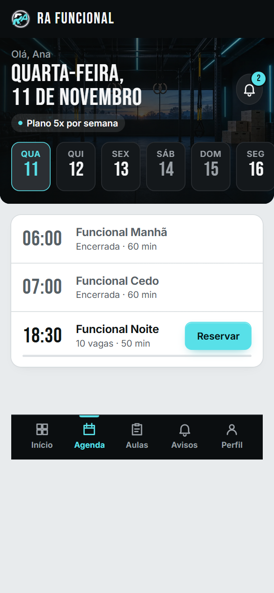
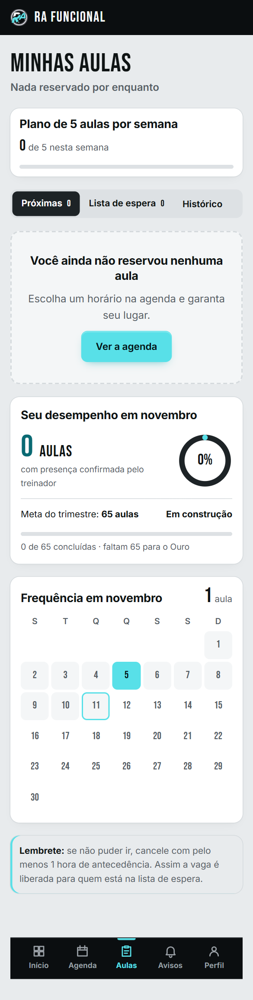
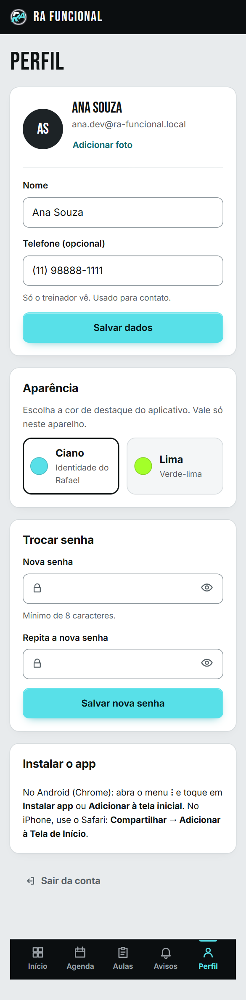
| Tela | Gravidade | Achado | Correção |
|---|---|---|---|
| Início | Médio | Sete blocos de peso parecido (capa, 3 números, treino, horários, recado). O olho não sabe onde parar depois da capa. | Capa (próxima aula) + um cartão "Seu mês" com gráfico + lista curta de hoje. Treino e recado viram linhas de uma linha. |
| Início | Médio | Os três números (aulas, semanas, meta) estão sem contexto: "0" e "0%" não dizem se é bom ou ruim. | Mostrar meta e direção: "7 de 12 aulas, 2 acima do mês passado" com mini barras de 8 semanas. |
| Aulas | Alto | 10 tamanhos de letra, três cartões de frequência (plano, desempenho, calendário) mais abas e lembrete. É a tela mais carregada do aluno. | Uma tela de lista (abas Próximas, Espera, Histórico) e um cartão "Seu mês" recolhível com o calendário dentro. |
| Agenda | Baixo | Enxuta e clara. Faixa de 14 dias ocupa bastante da capa no celular. | Reduzir a faixa para 7 dias visíveis com rolagem; manter a capa com foto. |
| Perfil | Médio | Dados, aparência, avisos, senha e instalar app, todos com a mesma altura visual. | Agrupar em "Conta" e "Preferências" recolhíveis; "Instalar app" só quando fizer sentido. |
| Detalhe da aula | Baixo | Data repetida na barra e na capa; a linha divisória e o título "Treino do dia" disputam com o título do treino. | Barra só com seta de voltar; data dentro da capa; treino sem rótulo extra. |
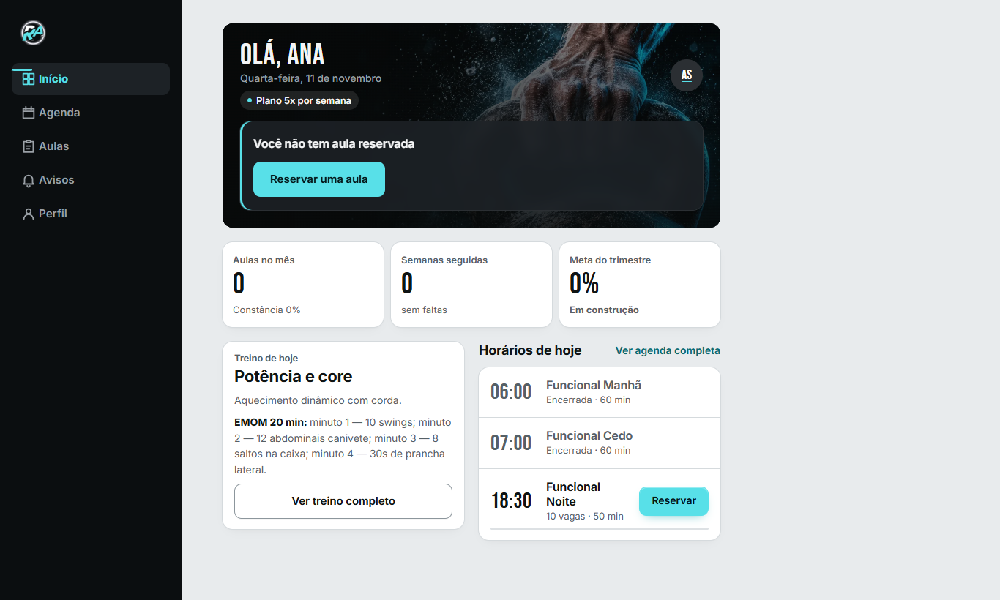
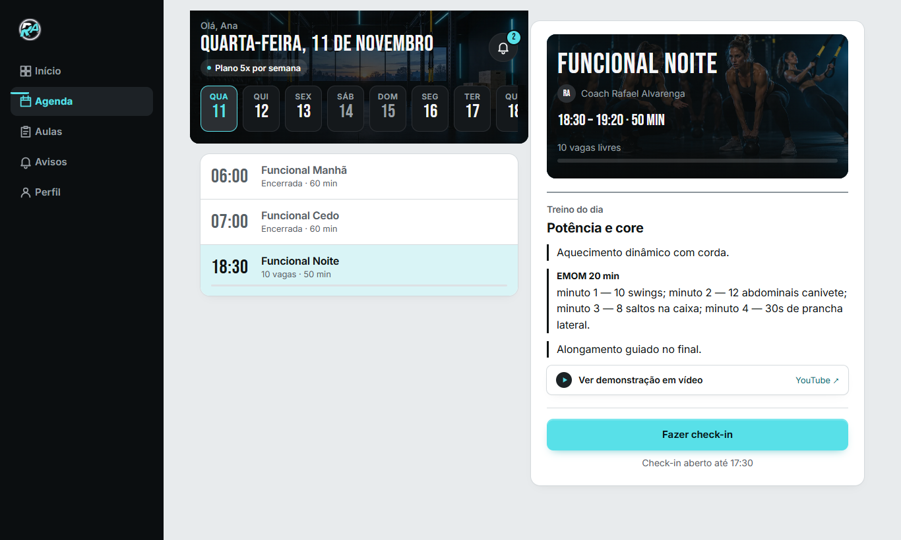
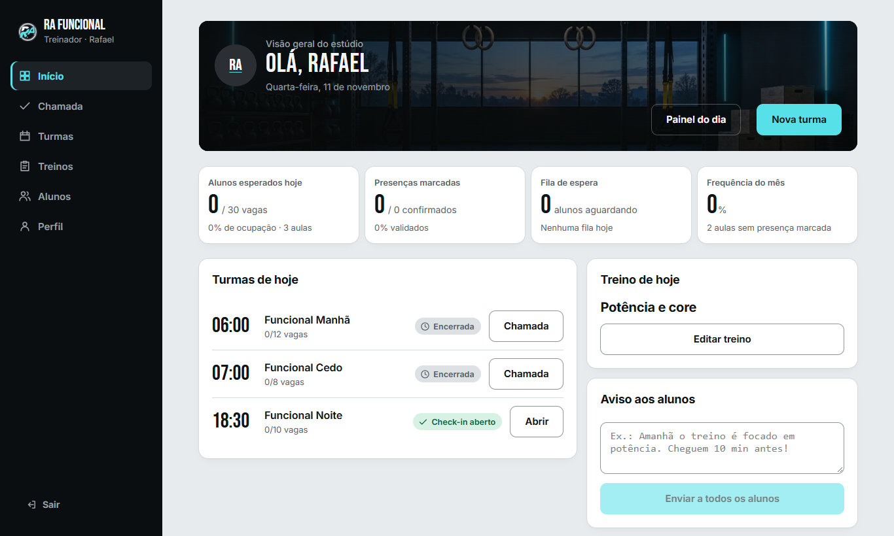
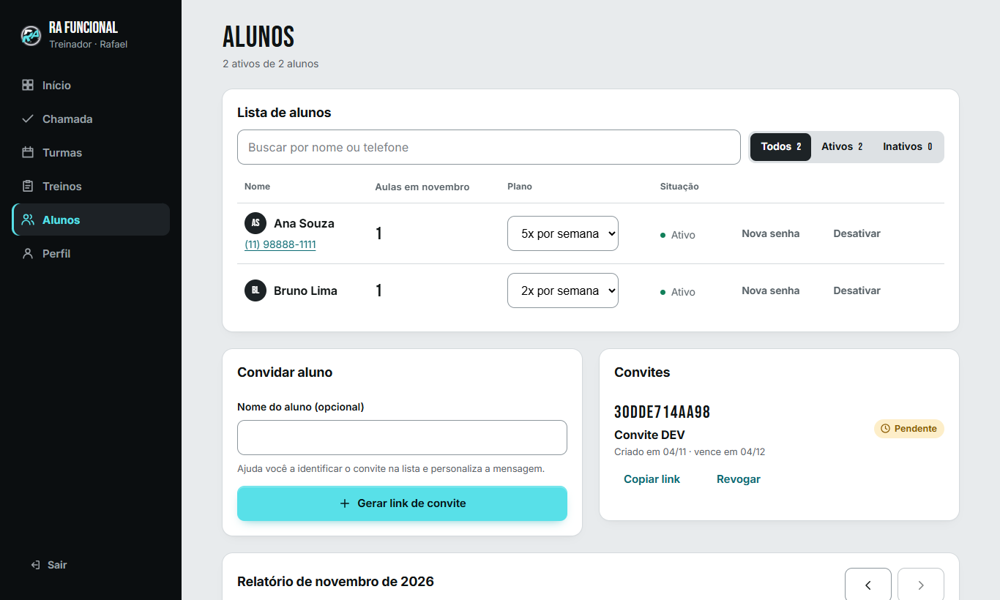
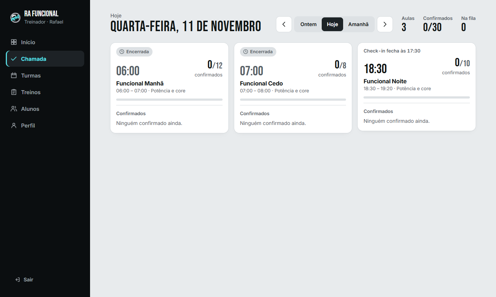
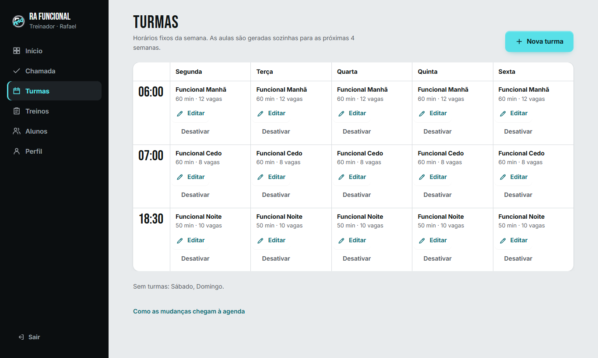
| Tela | Gravidade | Achado | Correção |
|---|---|---|---|
| Início | Alto | Dez blocos. Quatro quadros de números iguais, turmas, treino, aviso e gráfico: tudo com o mesmo peso. Com poucos dados, quatro zeros em fila parecem "app vazio". | Três faixas: (1) "Hoje" com as aulas e a chamada inline; (2) "Precisa de atenção" (sem marcação, fila grande, faltas seguidas); (3) tendências em gráficos. |
| Início e Chamada | Médio | São duas portas para a mesma tarefa (marcar presença). | Fundir: Início vira "Hoje"; a aba Chamada deixa de existir como tela separada e o seletor de dia fica no Início. |
| Alunos | Médio | Linha com nome, telefone, aulas, plano, situação, Nova senha e Desativar. Convite, lista de convites e relatório mensal na mesma página. | Lista simples (nome, plano, presença do mês em mini barra). Ações no menu da linha. Relatório vira aba "Relatório do mês". |
| Turmas | Baixo | Grade semanal clara. 31 botões iguais de Editar e Desativar poluem. | Clicar na célula abre o editor; "Desativar" dentro dele. |
| Treinos | Baixo | Enxuta e boa. Poderia mostrar a semana como linha do tempo com status (publicado, rascunho, vazio) em cores. | Manter; pequeno ajuste visual. |
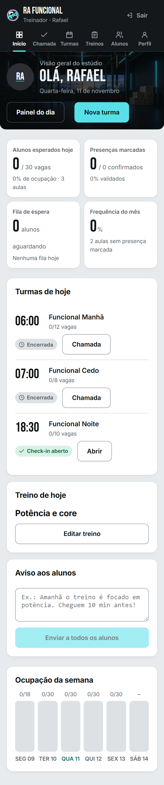
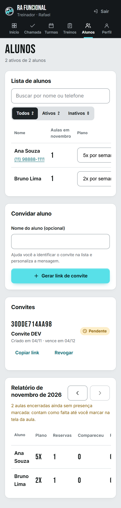
12, 14, 16, 20, 28, 44 (rótulo, apoio, texto, título de cartão, número médio, título/número grande).| Hoje | Proposta | |
|---|---|---|
| Aluno | 5 abas: Início, Agenda, Aulas, Avisos, Perfil | 4 abas: Início, Agenda, Minhas aulas, Perfil. Avisos viram o sino no topo com contagem. Reduz uma decisão e libera espaço na barra. |
| Professor | 6 itens: Início, Chamada, Turmas, Treinos, Alunos, Perfil | 5 itens: Hoje (com chamada), Turmas, Treinos, Alunos, Perfil. Relatório entra dentro de Alunos. |
Hoje existem números isolados e um gráfico de barras. A proposta é criar poucos componentes visuais e reutilizá-los, sem biblioteca externa (gráficos em SVG próprio, leves e com texto alternativo).
| Componente | Onde usar | Dados |
|---|---|---|
| Anel de presença (já existe, refinar) | Aluno: Seu mês | Presenças sobre aulas reservadas do mês. |
| Barras das últimas 8 semanas | Aluno: Seu mês. Professor: frequência geral | Presenças por semana. Nova consulta no banco (soma por semana). |
| Meta com marcos (Bronze, Prata, Ouro) | Aluno: Seu mês | Já existe (meta do trimestre); só muda o desenho: barra com três marcas. |
| Mapa de calor por dia e horário | Professor: ocupação | Confirmados sobre vagas por turma e dia da semana (4 a 8 semanas). |
| Linha de frequência (12 semanas) | Professor: tendência | Presenças sobre reservas por semana. |
| Lista "Precisa de atenção" | Professor: Hoje | Aulas sem presença marcada, filas grandes, alunos com 2 ou mais faltas seguidas. |
| Mini barras por aluno | Professor: Alunos | Presença do mês de cada aluno ao lado do nome. |
Ordem recomendada: A, depois B, depois C. A fase D pode correr junto. Cada fase termina com capturas, medição (blocos, tamanhos de letra, altura) e testes, para comparar com esta auditoria.
| # | Decisão | Minha recomendação |
|---|---|---|
| 1 | Reduzir o aluno para 4 abas (Avisos vira o sino no topo)? | Sim. |
| 2 | Fundir "Início" e "Chamada" do professor em uma tela "Hoje"? | Sim, mantendo o seletor de dia. |
| 3 | Tirar "Treino de hoje" e "Horários de hoje" do Início do aluno, deixando só uma linha de cada? | Sim: o detalhe e a Agenda já cobrem. |
| 4 | Relatório mensal e convites dentro de Alunos, em abas? | Sim. |
| 5 | Gráficos sem biblioteca externa (SVG próprio)? | Sim: menor, mais rápido e fiel à identidade. |
| 6 | Começo pela Fase A agora e deixo B e C para depois da sua avaliação? | Sim. |
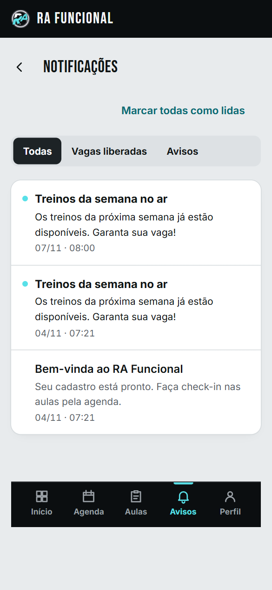
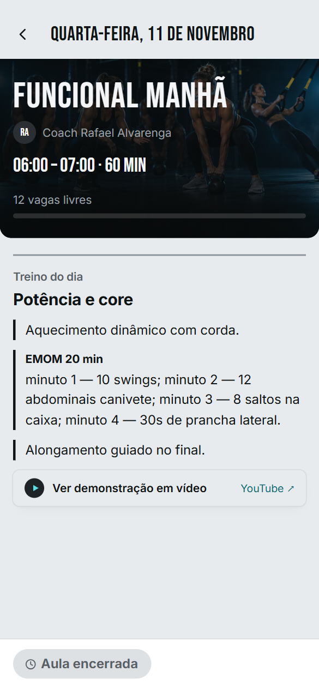
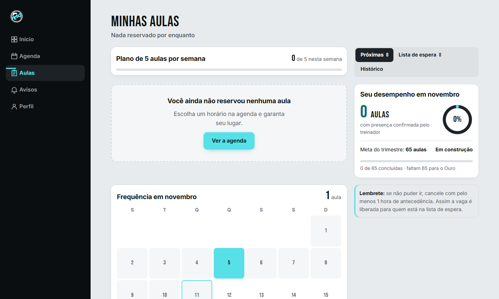
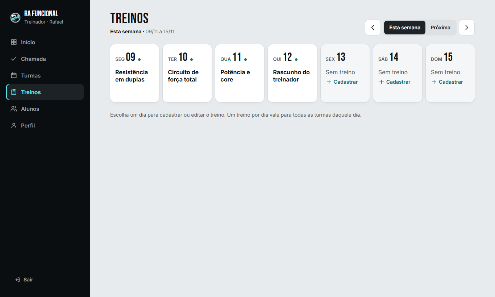
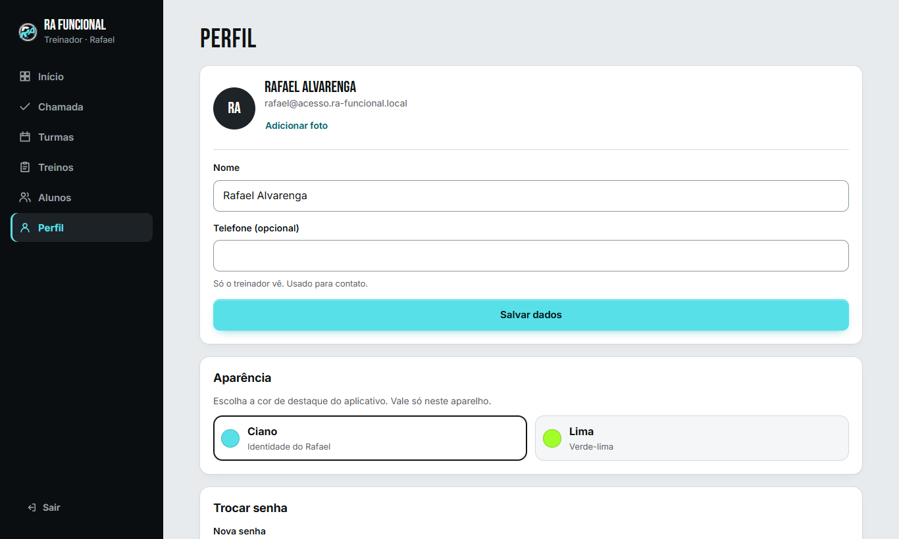